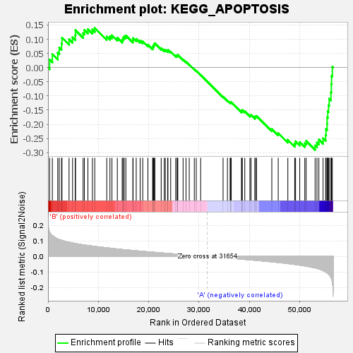

| | | Dataset | my.my.cls#B_versus_A.my.cls#B_versus_A_repos |
| Phenotype | my.cls#B_versus_A_repos |
| Upregulated in class | A |
| GeneSet | KEGG_APOPTOSIS |
| Enrichment Score (ES) | -0.2903833 |
| Normalized Enrichment Score (NES) | -0.97578025 |
| Nominal p-value | 0.46311477 |
| FDR q-value | 0.5965716 |
| FWER p-Value | 0.998 |
Table: GSEA Results Summary

Fig 1: Enrichment plot: KEGG_APOPTOSIS
Profile of the Running ES Score & Positions of GeneSet Members on the Rank Ordered List
| SYMBOL | TITLE | RANK IN GENE LIST | RANK METRIC SCORE | RUNNING ES | CORE ENRICHMENT | | 1 | NGF | na | 318 | 0.156 | 0.0280 | No |
| 2 | AKT2 | na | 864 | 0.133 | 0.0470 | No |
| 3 | IKBKG | na | 1935 | 0.112 | 0.0523 | No |
| 4 | PRKAR1A | na | 2235 | 0.109 | 0.0703 | No |
| 5 | IL1RAP | na | 2690 | 0.103 | 0.0846 | No |
| 6 | PIK3R1 | na | 2777 | 0.103 | 0.1051 | No |
| 7 | PRKACA | na | 4181 | 0.091 | 0.0999 | No |
| 8 | IL3RA | na | 4876 | 0.086 | 0.1062 | No |
| 9 | PRKAR2B | na | 5415 | 0.083 | 0.1146 | No |
| 10 | PRKX | na | 5463 | 0.083 | 0.1316 | No |
| 11 | AKT3 | na | 6968 | 0.075 | 0.1211 | No |
| 12 | IL1A | na | 7221 | 0.074 | 0.1325 | No |
| 13 | BID | na | 7926 | 0.070 | 0.1352 | No |
| 14 | PRKACB | na | 8823 | 0.067 | 0.1337 | No |
| 15 | TRAF2 | na | 9283 | 0.065 | 0.1395 | No |
| 16 | PPP3CB | na | 11670 | 0.055 | 0.1093 | No |
| 17 | BCL2L1 | na | 12299 | 0.053 | 0.1096 | No |
| 18 | IL1R1 | na | 12699 | 0.052 | 0.1137 | No |
| 19 | PIK3R5 | na | 13767 | 0.048 | 0.1052 | No |
| 20 | NTRK1 | na | 14733 | 0.045 | 0.0977 | No |
| 21 | BIRC2 | na | 14899 | 0.044 | 0.1044 | No |
| 22 | AIFM1 | na | 15135 | 0.044 | 0.1096 | No |
| 23 | BCL2 | na | 15463 | 0.042 | 0.1129 | No |
| 24 | IRAK4 | na | 16857 | 0.038 | 0.0965 | No |
| 25 | ENDOG | na | 16891 | 0.038 | 0.1042 | No |
| 26 | PRKACG | na | 17521 | 0.036 | 0.1009 | No |
| 27 | FASLG | na | 18302 | 0.034 | 0.0945 | No |
| 28 | PPP3CC | na | 18816 | 0.033 | 0.0924 | No |
| 29 | FAS | na | 19843 | 0.030 | 0.0807 | No |
| 30 | EXOG | na | 20775 | 0.027 | 0.0702 | No |
| 31 | CHUK | na | 20857 | 0.027 | 0.0746 | No |
| 32 | IRAK1 | na | 20973 | 0.027 | 0.0784 | No |
| 33 | PIK3CG | na | 21068 | 0.027 | 0.0824 | No |
| 34 | MAP3K14 | na | 21227 | 0.026 | 0.0853 | No |
| 35 | PIK3R3 | na | 22479 | 0.023 | 0.0681 | No |
| 36 | TP53 | na | 23100 | 0.021 | 0.0617 | No |
| 37 | IRAK3 | na | 23290 | 0.021 | 0.0629 | No |
| 38 | FADD | na | 23762 | 0.020 | 0.0587 | No |
| 39 | MYD88 | na | 23815 | 0.019 | 0.0620 | No |
| 40 | TNFRSF1A | na | 24369 | 0.018 | 0.0561 | No |
| 41 | RELA | na | 25360 | 0.016 | 0.0420 | No |
| 42 | IL3 | na | 25642 | 0.015 | 0.0402 | No |
| 43 | BAD | na | 25699 | 0.015 | 0.0424 | No |
| 44 | ATM | na | 25776 | 0.015 | 0.0442 | No |
| 45 | ENDOD1 | na | 26825 | 0.012 | 0.0282 | No |
| 46 | IL1B | na | 27408 | 0.010 | 0.0201 | No |
| 47 | PIK3CB | na | 28048 | 0.009 | 0.0107 | No |
| 48 | DFFA | na | 29058 | 0.006 | -0.0058 | No |
| 49 | PPP3R1 | na | 29444 | 0.005 | -0.0115 | No |
| 50 | PIK3CD | na | 30315 | 0.003 | -0.0261 | No |
| 51 | CASP9 | na | 34770 | -0.008 | -0.1033 | No |
| 52 | TRADD | na | 35633 | -0.010 | -0.1164 | No |
| 53 | PIK3R2 | na | 36180 | -0.011 | -0.1236 | No |
| 54 | NFKBIA | na | 36221 | -0.011 | -0.1219 | No |
| 55 | PIK3CA | na | 36393 | -0.012 | -0.1224 | No |
| 56 | TNFRSF10C | na | 38447 | -0.017 | -0.1550 | No |
| 57 | IKBKB | na | 38457 | -0.017 | -0.1514 | No |
| 58 | PRKAR1B | na | 38587 | -0.018 | -0.1500 | No |
| 59 | XIAP | na | 39081 | -0.019 | -0.1546 | No |
| 60 | RIPK1 | na | 40094 | -0.022 | -0.1679 | No |
| 61 | PPP3R2 | na | 40324 | -0.022 | -0.1671 | No |
| 62 | CAPN1 | na | 41077 | -0.024 | -0.1752 | No |
| 63 | CASP8 | na | 41202 | -0.025 | -0.1721 | No |
| 64 | CSF2RB | na | 41427 | -0.025 | -0.1706 | No |
| 65 | CFLAR | na | 44448 | -0.034 | -0.2167 | No |
| 66 | TNFSF10 | na | 45721 | -0.039 | -0.2309 | No |
| 67 | DFFB | na | 47632 | -0.045 | -0.2549 | No |
| 68 | AKT1 | na | 48994 | -0.051 | -0.2681 | No |
| 69 | PPP3CA | na | 49166 | -0.052 | -0.2600 | No |
| 70 | CASP6 | na | 49996 | -0.055 | -0.2627 | No |
| 71 | TNF | na | 50996 | -0.060 | -0.2674 | No |
| 72 | CHP2 | na | 51267 | -0.062 | -0.2589 | No |
| 73 | CASP7 | na | 53049 | -0.074 | -0.2746 | Yes |
| 74 | TNFRSF10B | na | 53421 | -0.076 | -0.2647 | Yes |
| 75 | BAX | na | 53794 | -0.080 | -0.2541 | Yes |
| 76 | IRAK2 | na | 54627 | -0.090 | -0.2494 | Yes |
| 77 | CASP3 | na | 55148 | -0.099 | -0.2373 | Yes |
| 78 | PRKAR2A | na | 55218 | -0.101 | -0.2169 | Yes |
| 79 | CASP10 | na | 55429 | -0.105 | -0.1980 | Yes |
| 80 | APAF1 | na | 55443 | -0.105 | -0.1755 | Yes |
| 81 | BIRC3 | na | 55562 | -0.108 | -0.1543 | Yes |
| 82 | NFKB1 | na | 55714 | -0.113 | -0.1327 | Yes |
| 83 | TNFRSF10D | na | 55837 | -0.116 | -0.1098 | Yes |
| 84 | CYCS | na | 56191 | -0.133 | -0.0875 | Yes |
| 85 | CAPN2 | na | 56266 | -0.138 | -0.0592 | Yes |
| 86 | TNFRSF10A | na | 56314 | -0.143 | -0.0293 | Yes |
| 87 | CHP1 | na | 56470 | -0.161 | 0.0027 | Yes |
Table: GSEA details [plain text format]
Fig 2: KEGG_APOPTOSIS
Blue-Pink O' Gram in the Space of the Analyzed GeneSet
Fig 3: KEGG_APOPTOSIS: Random ES distribution
Gene set null distribution of ES for KEGG_APOPTOSIS